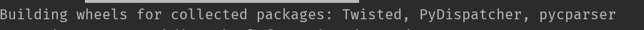
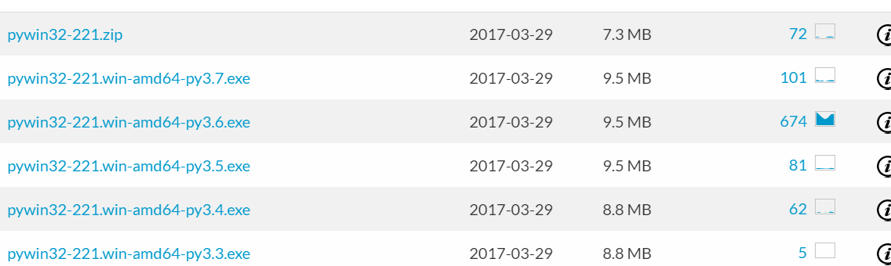
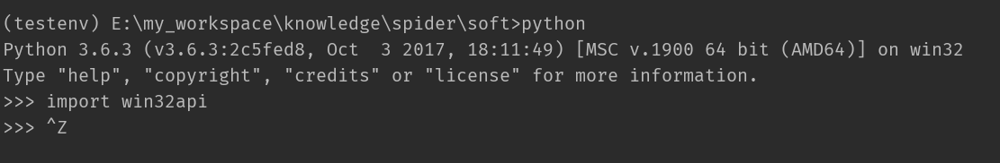
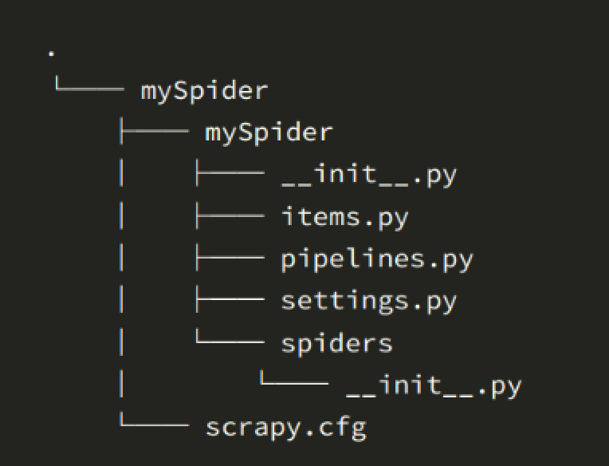
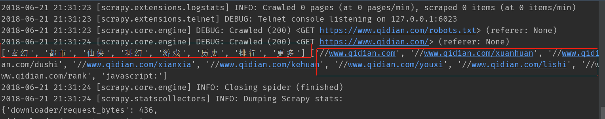

很长时间不用Scrapy框架，都快忘记应该怎么使用了，重拾Scrapy我复习了两天，把这两天的成果写成文章，供以后查阅
Scrapy 框架
- Scrapy是用纯Python实现一个为了爬取网站数据、提取结构性数据而编写的应用框架，用途非常广泛。
- 框架的力量，用户只需要定制开发几个模块就可以轻松的实现一个爬虫，用来抓取网页内容以及各种图片，非常之方便。
- Scrapy 使用了 Twisted
['twɪstɪd](其主要对手是Tornado)异步网络框架来处理网络通讯，可以加快我们的下载速度，不用自己去实现异步框架，并且包含了各种中间件接口，可以灵活的完成各种需求。
Scrapy架构图
注意：绿线是数据流向

Scrapy Engine(引擎): 负责Spider、ItemPipeline、Downloader、Scheduler中间的通讯，信号、数据传递等。Scheduler(调度器): 它负责接受引擎发送过来的Request请求，并按照一定的方式进行整理排列，入队，当引擎需要时，交还给引擎。Downloader（下载器）：负责下载Scrapy Engine(引擎)发送的所有Requests请求，并将其获取到的Responses交还给Scrapy Engine(引擎)，由引擎交给Spider来处理，Spider（爬虫）：它负责处理所有Responses,从中分析提取数据，获取Item字段需要的数据，并将需要跟进的URL提交给引擎，再次进入Scheduler(调度器)，Item Pipeline(管道)：它负责处理Spider中获取到的Item，并进行进行后期处理（详细分析、过滤、存储等）的地方.Downloader Middlewares（下载中间件）：你可以当作是一个可以自定义扩展下载功能的组件。Spider Middlewares（Spider中间件）：你可以理解为是一个可以自定扩展和操作引擎和Spider中间通信的功能组件（比如进入Spider的Responses;和从Spider出去的Requests）
Scrapy的运作流程(我认为这是重点重点重点)
代码写好，程序开始运行…
引擎：Hi！Spider, 你要处理哪一个网站？Spider：老大要我处理xxxx.com。引擎：你把第一个需要处理的URL给我吧。Spider：给你，第一个URL是xxxx.com。引擎：Hi！调度器，我这有request请求你帮我排序入队一下。调度器：好的，正在处理你等一下。引擎：Hi！调度器，把你处理好的request请求给我。调度器：给你，这是我处理好的request引擎：Hi！下载器，你按照老大的下载中间件的设置帮我下载一下这个request请求下载器：好的！给你，这是下载好的东西。（如果失败：sorry，这个request下载失败了。然后引擎告诉调度器，这个request下载失败了，你记录一下，我们待会儿再下载）引擎：Hi！Spider，这是下载好的东西，并且已经按照老大的下载中间件处理过了，你自己处理一下（注意！这儿responses默认是交给def parse()这个函数处理的）Spider：（处理完毕数据之后对于需要跟进的URL），Hi！引擎，我这里有两个结果，这个是我需要跟进的URL，还有这个是我获取到的Item数据。引擎：Hi ！管道我这儿有个item你帮我处理一下！调度器！这是需要跟进URL你帮我处理下。然后从第四步开始循环，直到获取完老大需要全部信息。管道``调度器：好的，现在就做！
注意！只有当调度器中不存在任何request了，整个程序才会停止，（也就是说，对于下载失败的URL，Scrapy也会重新下载。）
Scrapy的配置安装
安装
1 | pip install Scrapy |
安装过程中会安装如下一些包，在之前的安装过程中，偶尔会出现Twisted失败的话，需要自己手动去安装。

在此也先安装另外一个必备的包pywin32，如果不安装该包的话，在运行爬虫的时候可能会提示“ModuleNotFoundError: No module named ‘win32api’”，因为Python没有自带访问windows系统API的库的，需要下载第三方库。库的名称叫pywin32。可以去网站上下载，下载地址

按照自己电脑上的python版本，进行下载安装。安装的时候，先进入虚拟环境中，然后执行easy_install pywin32-221.win-amd64-py3.6.exe 命令即可将包安装在我们当前的虚拟环境中了。

**具体Scrapy安装流程参考：http://doc.scrapy.org/en/latest/intro/install.html#intro-install-platform-notes 里面有各个平台的安装方法
简单Scrapy 爬虫 一共需要4步：
- 新建项目 (scrapy startproject xxx)：新建一个新的爬虫项目
- 明确目标 （编写items.py）：明确你想要抓取的目标
- 制作爬虫 （spiders/xxspider.py）：制作爬虫开始爬取网页
- 存储内容 （pipelines.py）：设计管道存储爬取内容
入门案例
创建项目
- 在开始爬取之前，必须创建一个新的Scrapy项目。进入自定义的项目目录中，运行下列命令：
1 | scrapy startproject mySpider |
- 其中， mySpider 为项目名称，可以看到将会创建一个 mySpider 文件夹，目录结构大致如下：

下面来简单介绍一下各个主要文件的作用：
scrapy.cfg ：项目的配置文件，主要为Scrapy命令行工具提供一个基础的配置信息。（真正爬虫相关的配置信息在settings.py文件中）
mySpider/ ：项目的Python模块，将会从这里引用代码
mySpider/items.py ：设置数据存储模板，用于结构化数据，如：Django的Model
mySpider/pipelines.py ：项目的管道文件
mySpider/settings.py ：项目的设置文件
mySpider/spiders/ ：存储爬虫代码目录
制作爬虫
- 在当前目录下输入命令，将在
mySpider/spider目录下创建一个名为qidian的爬虫，并指定爬取域的范围：
1 | scrapy genspider qidian www.qidian.com |
- 打开 mySpider/spider目录里的 qidian.py，默认增加了下列代码:
1 | import scrapy |
其实也可以由我们自行创建qidian.py并编写上面的代码，只不过使用命令可以免去编写固定代码的麻烦
要建立一个Spider， 你必须用scrapy.Spider类创建一个子类，并确定了三个强制的属性 和 一个方法。
name = ""：这个爬虫的识别名称，必须是唯一的，在不同的爬虫必须定义不同的名字。allow_domains = []是搜索的域名范围，也就是爬虫的约束区域，规定爬虫只爬取这个域名下的网页，不存在的URL会被忽略。start_urls = []：爬取的URL元祖/列表。爬虫从这里开始抓取数据，所以，第一次下载的数据将会从这些urls开始。其他子URL将会从这些起始URL中继承性生成。parse(self, response)：解析的方法，每个初始URL完成下载后将被调用，调用的时候传入从每一个URL传回的Response对象来作为唯一参数，主要作用如下：- 负责解析返回的网页数据(response.body)，提取结构化数据(生成item)
- 生成需要下一页的URL请求。
将start_urls的值修改为需要爬取的第一个url
1 | start_urls = ['http://www.qidian.com/'] |
修改parse()方法
1 | def parse(self, response): |
然后运行一下看看，在mySpider目录下执行：
1 | scrapy crawl qidian |
是的，就是 qidian，看上面代码，它是 QidianSpider类的 name 属性，也就是使用 scrapy genspider命令的唯一爬虫名。
运行之后，如果打印的日志出现 [scrapy] INFO: Spider closed (finished)，代表执行完成。
执行流程：
name: spider对应不同的name
start_urls:是spider抓取网页的起始点，可以包括多个url。
parse()：spider抓到一个网页以后默认调用的callback，避免使用这个名字来定义自己的方法。当spider拿到url的内容以后，会调用parse方法，并且传递一个response参数给它，response包含了抓到的网页的内容，在parse方法里，你可以从抓到的网页里面解析数据。
运行结果：
